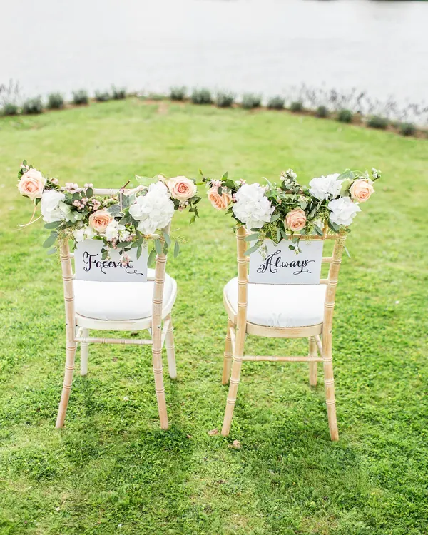
Por la tarde
La ceremonia
Al aire libre, con el verde como fondo y los invitados cerca.
Propuesta de demostración: no es el sitio oficial de Villa Jardín. Las fotografías son de referencia.
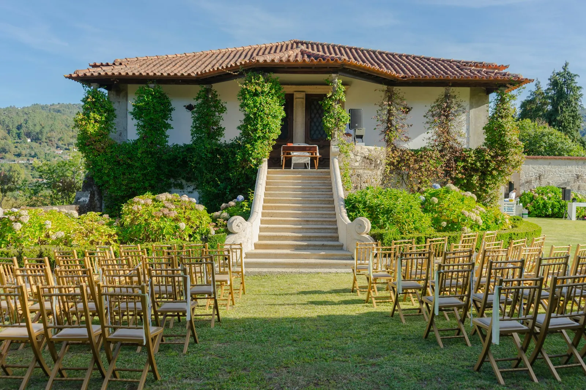
Finca campestre en el área de Bucaramanga
Celebra el amor, la familia y los grandes momentos en un entorno campestre lleno de encanto.
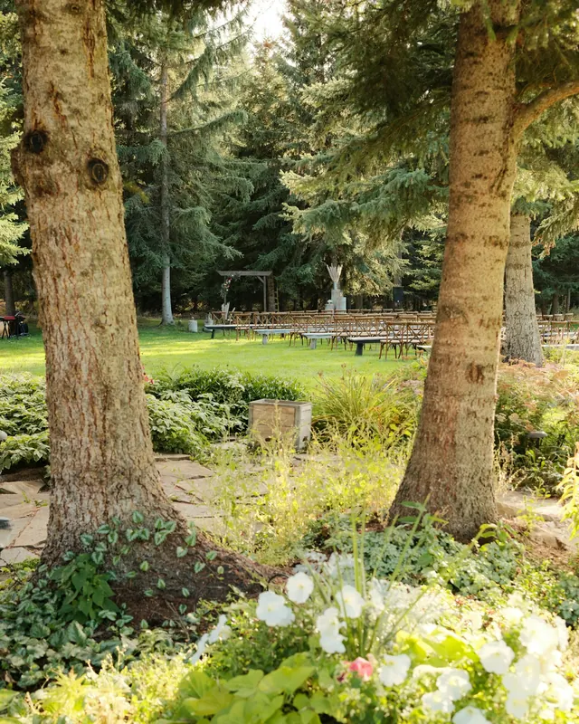
Villa Jardín es una finca campestre para recepciones y eventos en el área metropolitana de Bucaramanga. Aire libre, verde alrededor y la luz de la tarde como parte de la celebración.
Aquí el día se piensa sin prisa: desde la llegada de los invitados hasta el último brindis. Cuéntanos qué celebras y cuántas personas esperas, y preparamos contigo una propuesta a la medida de tu fecha.
Las fotos de esta propuesta son de referencia y se reemplazan por fotografías de la finca.
Ver cómo se organiza un eventoElige la tuya para ver una idea del ambiente y escribirnos sobre ella. Tipos de evento por confirmar con la finca
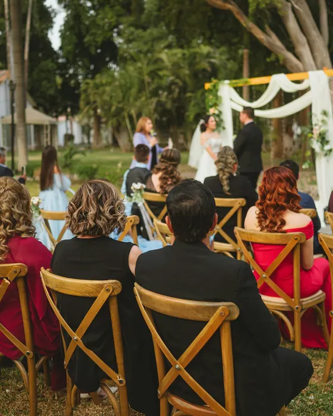
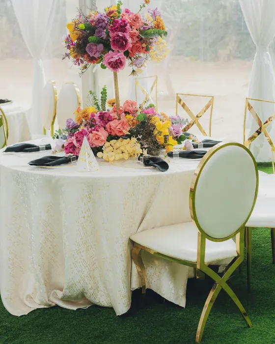
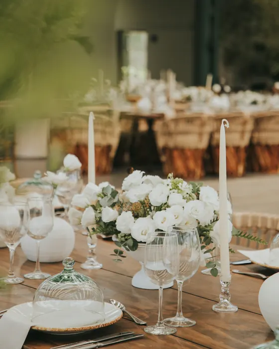
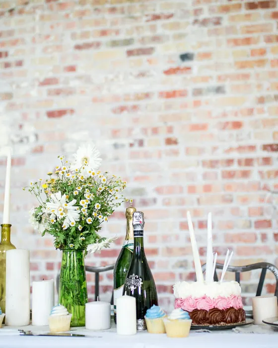
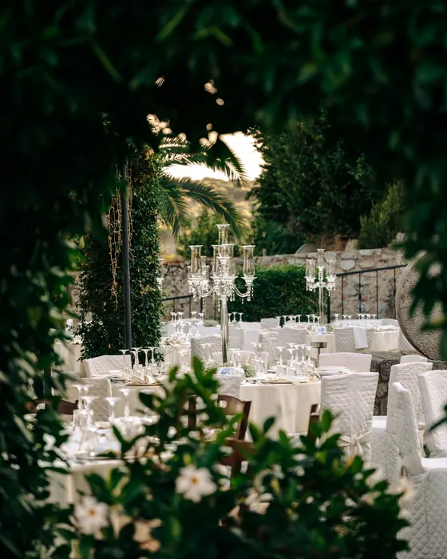
Ambientes de referencia para conversar sobre estilo, flores y montaje. Las fotos reales de la finca reemplazarán esta selección.
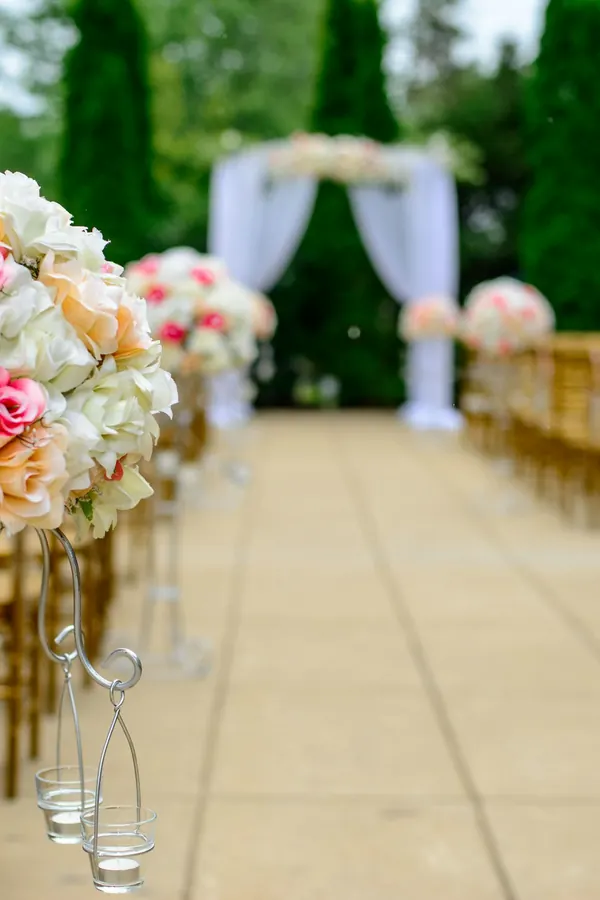
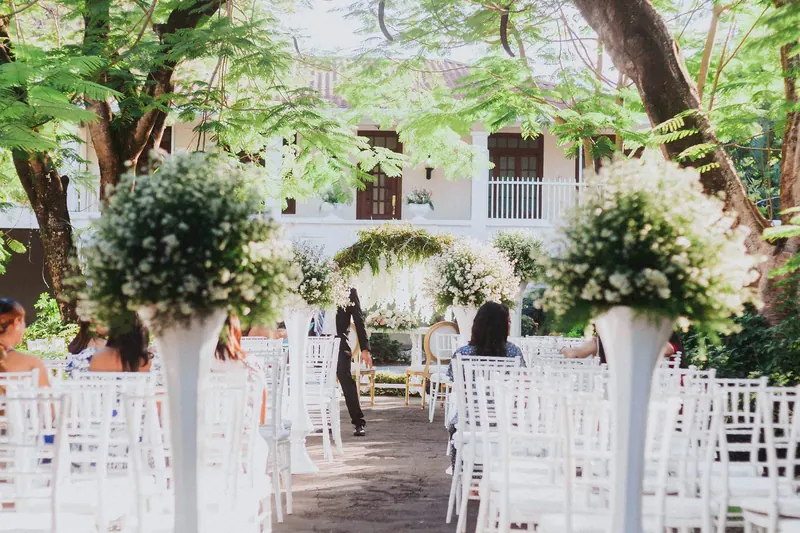
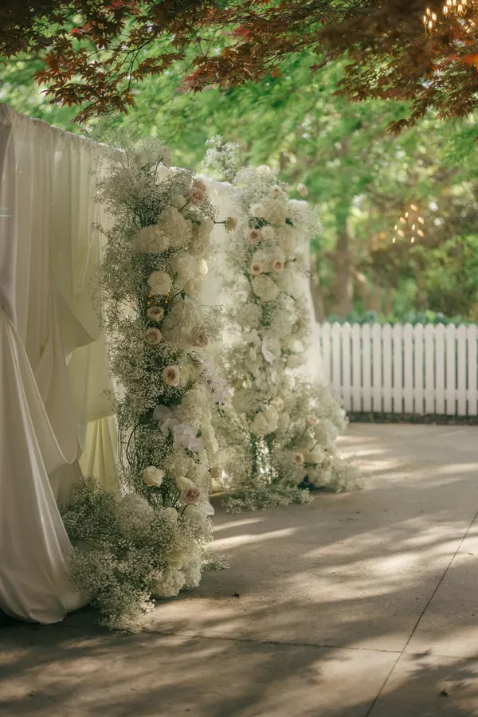
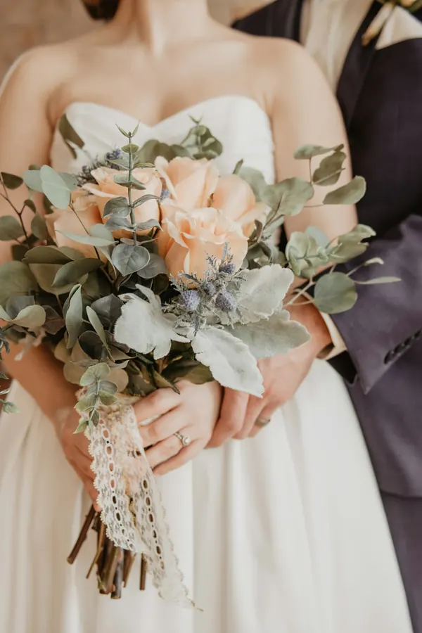
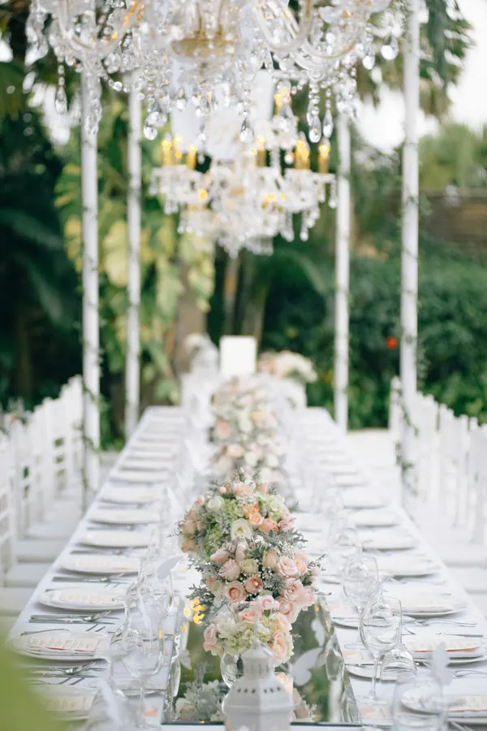
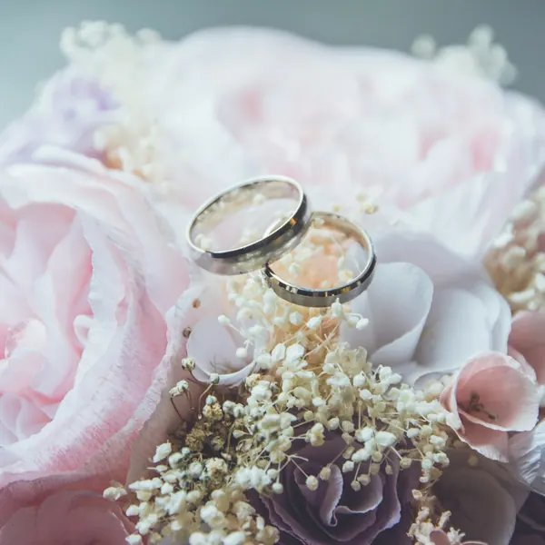
¿Ya te imaginas el día? Cuéntanos tu fecha y te ayudamos con el resto.
Cotizar mi evento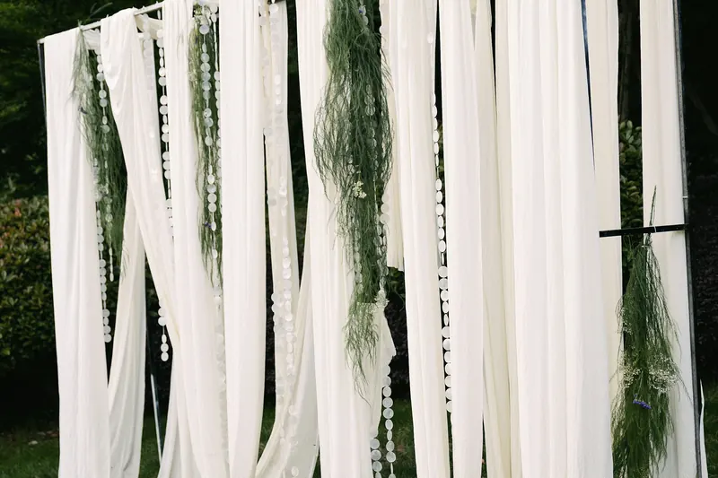
Así puede transcurrir una celebración en el campo. El montaje final se define contigo en la propuesta.

Por la tarde
Al aire libre, con el verde como fondo y los invitados cerca.
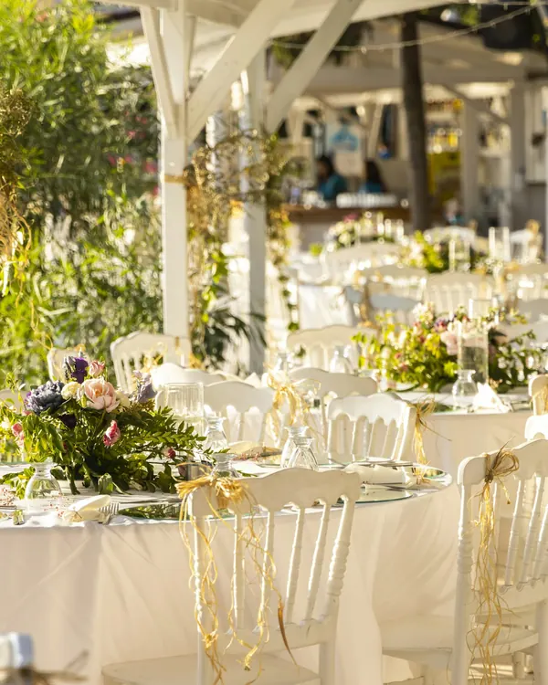
Al atardecer
Mesas vestidas, brindis y la cena compartida con los tuyos.
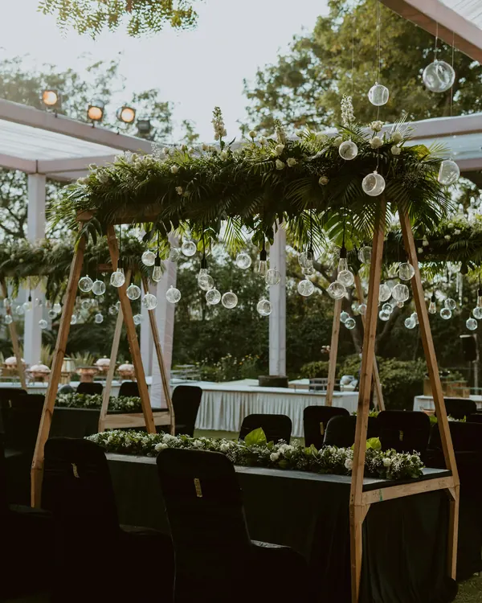
De noche
Luces cálidas, música y la pista abierta hasta el final.
Cuatro pasos, de la primera llamada a la fecha reservada.
Empezar con la consultaNos cuentas qué celebras, la fecha que tienes en mente y cuántos invitados esperas.
Recibes una propuesta con lo que incluye el evento y las condiciones de reserva.
Conoces la finca en persona y resolvemos juntos los detalles del montaje.
Separas tu fecha según las condiciones acordadas y empezamos a preparar el día.
Área metropolitana de Bucaramanga, Santander
Dirección exacta por confirmar
Abrir en Google MapsLas fechas se reservan en orden de confirmación. Consulta la tuya antes de fijar invitaciones.
Horario de visitas por confirmar
Lo que incluye cada evento lo confirma la finca en la propuesta. Al cotizar, pregunta por:
Si tu pregunta no está aquí, llámanos y la resolvemos.
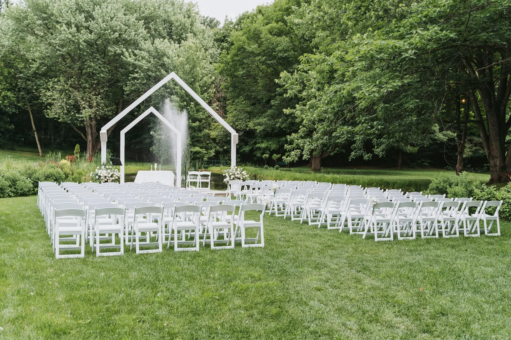
Llámanos con tu fecha tentativa y el número de invitados. Te respondemos con disponibilidad y una propuesta para tu evento.
WhatsApp por confirmar Cuando la finca confirme qué línea usa WhatsApp, se activa el botón con un mensaje listo para enviar.